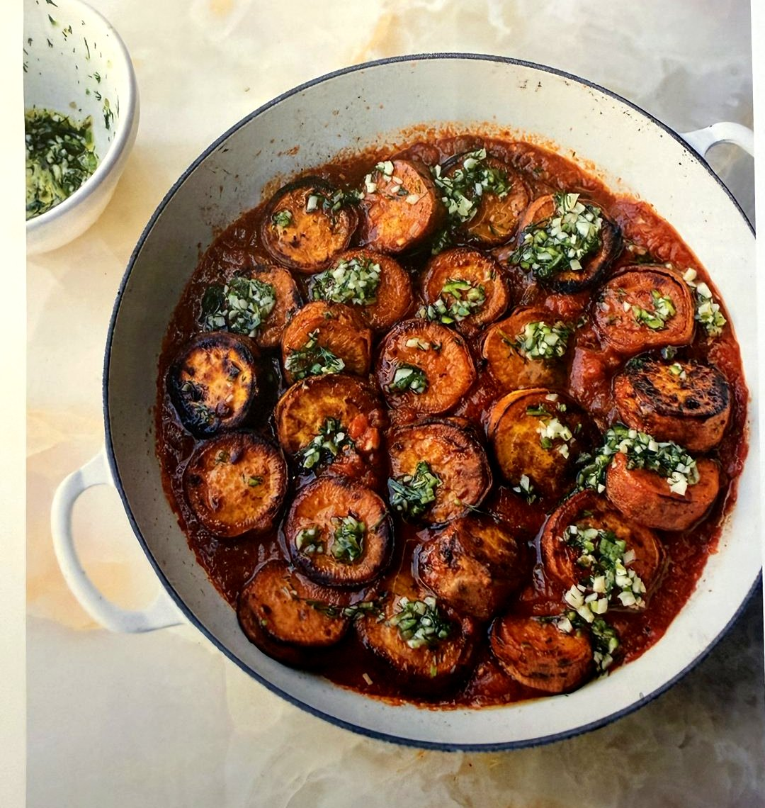

Hauptgericht
Süßkartoffeln in Tomatensauce mit Limette und Kardamom

Geröstete Süßkartoffeln in einer würzigen Tomatensauce mit Kardamom, Kreuzkümmel und Limette – ein Rezept aus "Flavour" von Yotam Ottolenghi. Rein pflanzlich, mit Olivenöl statt tierischem Fett, dazu Reis oder Couscous.
Süßkartoffeln (für 4 Personen als Hauptgericht)
- 4–5 mittelgroße Süßkartoffeln (ca. 1 kg), ungeschält, in 2,5 cm dicke Scheiben geschnitten
- 2 EL Olivenöl
- 1½ EL Ahornsirup
- ½ TL gemahlener Kardamom
- ½ TL gemahlener Kreuzkümmel
- Salz und schwarzer Pfeffer
Tomatensauce mit Limette und Kardamom
- 75 ml Olivenöl
- 6 Knoblauchzehen, fein gehackt
- 2 grüne Chilischoten, fein gehackt (entkernt für weniger Schärfe)
- 2 kleine Schalotten, fein gewürfelt (100 g)
- 1 Dose Tomaten (400 g), püriert
- 1 EL Tomatenmark
- 1½ TL Zucker
- 1½ TL gemahlener Kardamom
- 1 TL gemahlener Kreuzkümmel
- 2 Bio-Limetten (1 TL Schale, 1 TL Saft, Rest in Spalten zum Servieren)
- 2 TL fein gehackter Dill
Zubereitung
- Backofen auf 240 °C (Umluft) vorheizen. Süßkartoffeln mit Öl, Ahornsirup, Kardamom, Kreuzkümmel, ½ TL Salz und etwas Pfeffer vermengen. Auf einem Blech verteilen, mit Alufolie abdecken und 25 Minuten backen. Folie entfernen und weitere 10–12 Minuten backen, bis die Scheiben gar und von unten gebräunt sind.
- Für die Sauce: Öl, Knoblauch, Chili und 1 Prise Salz in einer großen Schmorpfanne bei mittlerer Hitze 8–10 Minuten sanft andünsten, bis der Knoblauch weich ist (nicht bräunen). Die Hälfte der Öl-Chili-Knoblauch-Mischung beiseitestellen.
- Schalotten in die Pfanne geben, 5 Minuten glasig dünsten. Pürierte Tomaten, Tomatenmark, Zucker, Kardamom, Kreuzkümmel, Limettenschale und 1 TL Salz zugeben, 5 Minuten erhitzen. 250 ml Wasser zugießen, weitere 5 Minuten köcheln lassen.
- Süßkartoffelscheiben mit der gebräunten Seite nach oben in die Sauce legen (ruhig stapeln), zugedeckt bei schwacher Hitze 10 Minuten durchziehen lassen.
- Das beiseitegestellte Chili-Knoblauch-Öl mit Dill und Limettensaft verrühren, über die Süßkartoffeln träufeln. Mit Limettenspalten servieren, dazu Reis oder Couscous.
Rezept aus "Flavour" von Yotam Ottolenghi.